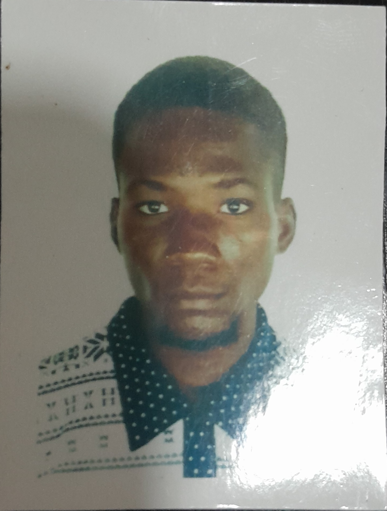

Tunde Adeyemi
]
Summary
I am a hardworking and dedicated indivival with experience in hospitality operations, administrative supposrt and customer engagement.
Education
- National Diploma, Mechanical Engineering - Yaba College of Technology(2017-2020)
- Bachelor of Science, Mathematics - Lagos State University Ojo(2020-2024)
Professional Experience
-
Assitant operations Supervisor - Bukkha Hospitality Ltd.
November 2024 - Present
- Minimized product shortages through effective monitoring and inventory management.
- Oversaw financial transactions to ensure accuracy and accountability.
- Ensured customers were billed accurately as a result preventing underbilling or over billing.
- Detected and mitigated financial fraud, theft, discrepancy and product mismanagement.
- Supervised and co-ordinated all activities of the Front-line staff.
Skills
- Soft Skills; Communication, Active Listening, Team-Player,Leadership and Problem solving.
- Technical Skills; I.T, Microsoft Office Suite, HTML, CSS and Excel
Language(s)
Fluent in English and Yoruba
Others
Contact Me